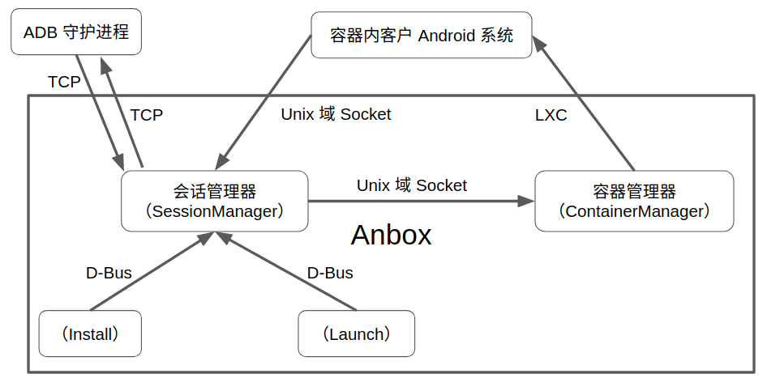
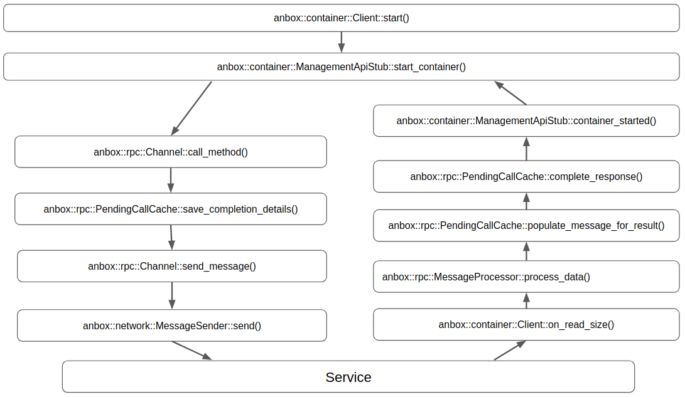

Anbox 实现分析 3：会话管理器与容器管理器的通信
Anbox 通过一个可执行文件，实现多个不同的应该用逻辑。在启动 Anbox 可执行文件时，通过为它提供不同的命令行参数来确定具体执行哪个命令。Anbox 中这些不同的命令实例之间，整体的通信架构如下图这样：

这些不同的命令实例之间通信的过程大体如下：
- 容器管理器实例首先运行起来，监听在特定位置的 Unix 域 Socket 上；
- 随后会话管理器启动，监听在另外的一些 Unix 域 Socket 上；
- 会话管理器同时连接容器管理器监听的 Unix 域 Socket 上的服务；
- 会话管理器与容器管理器通过 Unix 域 Socket 成功建立连接之后，会话管理器向容器管理器发送命令，请求容器管理器启动 Android 容器；
- 容器管理器收到会话管理器发来的命令后，先给会话管理器一个响应，然后通过 LXC 启动一个 Android 容器，并将会话管理器监听的 Unix 域 Socket 的文件路径映射进 Android 容器的
/dev/目录下； - Android 容器启动之后，容器内的 Android 进程，通过映射进来的 Unix 域 Socket 与会话管理器建立连接；
- Android 容器启动时，会话管理器与 ADB 守护进程建立连接；
- Anbox 的 install 和 launch 命令主要用于对 Android 容器做一些控制，它们分别用于向 Android 容器中安装应用程序 APK 以及启动容器内的特定 Activity，它们通过 D-Bus 与会话管理器通信。
在 Anbox 中，会话管理器和容器管理器之间是比较重要的一条通信通道。会话管理器和容器管理器之间通过 Unix 域 Socket 进行通信，容器管理器监听在特定位置的 Unix 域 Socket 上，会话管理器发起与容器管理器之间的连接，连接建立之后，两者通过这条连接进行通信。
容器管理器接受 RPC 调用
代码层面，在容器管理器一端，通过 anbox::container::Service 启动对 Unix 域 Socket 的监听。anbox::container::Service 的定义（位于anbox/src/anbox/container/service.h）如下：
namespace anbox {
namespace container {
class Service : public std::enable_shared_from_this<Service> {
public:
static std::shared_ptr<Service> create(const std::shared_ptr<Runtime> &rt, bool privileged);
~Service();
private:
Service(const std::shared_ptr<Runtime> &rt, bool privileged);
int next_id();
void new_client(std::shared_ptr<
boost::asio::local::stream_protocol::socket> const &socket);
std::shared_ptr<common::Dispatcher> dispatcher_;
std::shared_ptr<network::PublishedSocketConnector> connector_;
std::atomic<int> next_connection_id_;
std::shared_ptr<network::Connections<network::SocketConnection>> connections_;
std::shared_ptr<Container> backend_;
bool privileged_;
};
} // namespace container
} // namespace anbox
*dispatcher_ 看起来没有实际的用处。* anbox::container::Service 的实现（位于 anbox/src/anbox/container/service.cpp）如下：
namespace anbox {
namespace container {
std::shared_ptr<Service> Service::create(const std::shared_ptr<Runtime> &rt, bool privileged) {
auto sp = std::shared_ptr<Service>(new Service(rt, privileged));
auto wp = std::weak_ptr<Service>(sp);
auto delegate_connector = std::make_shared<network::DelegateConnectionCreator<boost::asio::local::stream_protocol>>(
[wp](std::shared_ptr<boost::asio::local::stream_protocol::socket> const &socket) {
if (auto service = wp.lock())
service->new_client(socket);
});
const auto container_socket_path = SystemConfiguration::instance().container_socket_path();
sp->connector_ = std::make_shared<network::PublishedSocketConnector>(container_socket_path, rt, delegate_connector);
// Make sure others can connect to our socket
::chmod(container_socket_path.c_str(), S_IRUSR | S_IWUSR | S_IRGRP | S_IWGRP | S_IROTH | S_IWOTH);
DEBUG("Everything setup. Waiting for incoming connections.");
return sp;
}
Service::Service(const std::shared_ptr<Runtime> &rt, bool privileged)
: dispatcher_(anbox::common::create_dispatcher_for_runtime(rt)),
next_connection_id_(0),
connections_(std::make_shared<network::Connections<network::SocketConnection>>()),
privileged_(privileged) {
}
Service::~Service() {
connections_->clear();
}
int Service::next_id() { return next_connection_id_++; }
void Service::new_client(std::shared_ptr<boost::asio::local::stream_protocol::socket> const
&socket) {
if (connections_->size() >= 1) {
socket->close();
return;
}
auto const messenger = std::make_shared<network::LocalSocketMessenger>(socket);
DEBUG("Got connection from pid %d", messenger->creds().pid());
auto pending_calls = std::make_shared<rpc::PendingCallCache>();
auto rpc_channel = std::make_shared<rpc::Channel>(pending_calls, messenger);
auto server = std::make_shared<container::ManagementApiSkeleton>(
pending_calls, std::make_shared<LxcContainer>(privileged_, messenger->creds()));
auto processor = std::make_shared<container::ManagementApiMessageProcessor>(
messenger, pending_calls, server);
auto const &connection = std::make_shared<network::SocketConnection>(
messenger, messenger, next_id(), connections_, processor);
connection->set_name("container-service");
connections_->add(connection);
connection->read_next_message();
}
} // namespace container
} // namespace anbox
在 anbox::container::Service 的构造函数中，通过 anbox::network::PublishedSocketConnector 及 anbox::network::DelegateConnectionCreator 等组件，启动对 Unix 域 Socket 的监听。Anbox 中处理 Unix 域 Socket 监听的基本方法/模型，请参考 Anbox 实现分析 2：I/O 模型 一文中的相关部分。
anbox::container::Service 通过 anbox::network::Connections 和
anbox::network::SocketConnection 等管理新接受的连接，它限制只与一个会话管理器实例建立一条连接。anbox::container::Service 将处理收到的消息的组件 anbox::container::ManagementApiMessageProcessor 与底层的连接粘起来。
Anbox 的容器管理器和会话管理器通过基于 Protobuf 设计的 RPC 进行通信。anbox::container::Service 中处理收到的消息及接受 RPC 调用的相关组件的设计框架如下：

*在 Anbox 的设计中，anbox::rpc::Channel 及 anbox::rpc::PendingCallCache 本来主要用于 RPC 调用发起端的消息收发，但在 anbox::container::Service::new_client() 中，同样为新连接创建了这两个类的对象，这显得有点多次一举。*
anbox::container::Service 通过 anbox::network::SocketConnection 收到消息之后，首先交给 anbox::rpc::MessageProcessor 的 process_data() 处理。
anbox::rpc::MessageProcessor 的定义（位于 anbox/src/anbox/rpc/message_processor.h）如下：
class MessageProcessor : public network::MessageProcessor {
public:
MessageProcessor(const std::shared_ptr<network::MessageSender>& sender,
const std::shared_ptr<PendingCallCache>& pending_calls);
~MessageProcessor();
bool process_data(const std::vector<std::uint8_t>& data) override;
void send_response(::google::protobuf::uint32 id,
google::protobuf::MessageLite* response);
virtual void dispatch(Invocation const&) {}
virtual void process_event_sequence(const std::string&) {}
private:
std::shared_ptr<network::MessageSender> sender_;
std::vector<std::uint8_t> buffer_;
std::shared_ptr<PendingCallCache> pending_calls_;
};
anbox::rpc::MessageProcessor 的实现（位于 anbox/src/anbox/rpc/message_processor.cpp）如下：
MessageProcessor::MessageProcessor(
const std::shared_ptr<network::MessageSender> &sender,
const std::shared_ptr<PendingCallCache> &pending_calls)
: sender_(sender), pending_calls_(pending_calls) {}
MessageProcessor::~MessageProcessor() {}
bool MessageProcessor::process_data(const std::vector<std::uint8_t> &data) {
for (const auto &byte : data) buffer_.push_back(byte);
while (buffer_.size() > 0) {
const auto high = buffer_[0];
const auto low = buffer_[1];
size_t const message_size = (high << 8) + low;
const auto message_type = buffer_[2];
// If we don't have yet all bytes for a new message return and wait
// until we have all.
if (buffer_.size() - header_size < message_size) break;
if (message_type == MessageType::invocation) {
anbox::protobuf::rpc::Invocation raw_invocation;
raw_invocation.ParseFromArray(buffer_.data() + header_size, message_size);
dispatch(Invocation(raw_invocation));
} else if (message_type == MessageType::response) {
auto result = make_protobuf_object<protobuf::rpc::Result>();
result->ParseFromArray(buffer_.data() + header_size, message_size);
if (result->has_id()) {
pending_calls_->populate_message_for_result(*result,
[&](google::protobuf::MessageLite *result_message) {
result_message->ParseFromString(result->response());
});
pending_calls_->complete_response(*result);
}
for (int n = 0; n < result->events_size(); n++)
process_event_sequence(result->events(n));
}
buffer_.erase(buffer_.begin(),
buffer_.begin() + header_size + message_size);
}
return true;
}
void MessageProcessor::send_response(::google::protobuf::uint32 id,
google::protobuf::MessageLite *response) {
VariableLengthArray<serialization_buffer_size> send_response_buffer(
static_cast<size_t>(response->ByteSize()));
response->SerializeWithCachedSizesToArray(send_response_buffer.data());
anbox::protobuf::rpc::Result send_response_result;
send_response_result.set_id(id);
send_response_result.set_response(send_response_buffer.data(),
send_response_buffer.size());
send_response_buffer.resize(send_response_result.ByteSize());
send_response_result.SerializeWithCachedSizesToArray(
send_response_buffer.data());
const size_t size = send_response_buffer.size();
const unsigned char header_bytes[header_size] = {
static_cast<unsigned char>((size >> 8) & 0xff),
static_cast<unsigned char>((size >> 0) & 0xff), MessageType::response,
};
std::vector<std::uint8_t> send_buffer(sizeof(header_bytes) + size);
std::copy(header_bytes, header_bytes + sizeof(header_bytes),
send_buffer.begin());
std::copy(send_response_buffer.data(),
send_response_buffer.data() + send_response_buffer.size(),
send_buffer.begin() + sizeof(header_bytes));
sender_->send(reinterpret_cast<const char *>(send_buffer.data()),
send_buffer.size());
}
在会话管理器与容器管理器之间的 RPC 通信中，anbox::rpc::MessageProcessor 是一个同时用于 RPC 调用发起端和接受端的组件。容器管理器作为 RPC 调用的接受端，接收发自于会话管理器的类型为 MessageType::invocation 的消息。
会话管理器与容器管理器之间的 RPC 通信的消息格式为：[3 个字节的消息头] + [经由 Protobuf MessageLite 对象序列化得到的消息体]，其中消息头的前两个字节为 16 位的消息体长度的大尾端表示，第 3 个字节为消息的类型。RPC 消息的具体定义在 anbox/src/anbox/protobuf/anbox_rpc.proto 文件中：
option optimize_for = LITE_RUNTIME;
package anbox.protobuf.rpc;
message Invocation {
required uint32 id = 1;
required string method_name = 2;
required bytes parameters = 3;
required uint32 protocol_version = 4;
}
message Result {
optional uint32 id = 1;
optional bytes response = 2;
repeated bytes events = 3;
}
message StructuredError {
optional uint32 domain = 1;
optional uint32 code = 2;
}
message Void {
optional string error = 127;
optional StructuredError structured_error = 128;
}
Invocation 消息用于发起 RPC 调用，Result、Void 和 StructuredError 用于返回响应或错误消息。
对于容器管理器而言，anbox::rpc::MessageProcessor 在其 process_data() 中首先提取消息头，得到消息体的长度和类型，然后提取消息体并反序列化得到 Protobuf 消息 anbox::protobuf::rpc::Invocation，随后将该 Protobuf 消息封装为 anbox::rpc::Invocation 类的对象，并调用 dispatch(Invocation const&) 将消息派发出去。
anbox::rpc::Invocation 类的定义（位于 anbox/src/anbox/rpc/message_processor.h 中）如下：
class Invocation {
public:
Invocation(anbox::protobuf::rpc::Invocation const& invocation)
: invocation_(invocation) {}
const ::std::string& method_name() const;
const ::std::string& parameters() const;
google::protobuf::uint32 id() const;
private:
anbox::protobuf::rpc::Invocation const& invocation_;
};
anbox::rpc::Invocation 类的实现（位于 anbox/src/anbox/rpc/message_processor.cpp 中）如下：
const ::std::string &Invocation::method_name() const {
return invocation_.method_name();
}
const ::std::string &Invocation::parameters() const {
return invocation_.parameters();
}
google::protobuf::uint32 Invocation::id() const { return invocation_.id(); }
anbox::rpc::Invocation 类只是对 anbox::protobuf::rpc::Invocation 的简单包装。
anbox::rpc::MessageProcessor 的 dispatch(Invocation const&) 是一个虚函数，其实际的实现位于 ManagementApiMessageProcessor 中。anbox::container::ManagementApiMessageProcessor 的定义（位于 anbox/src/anbox/container/management_api_message_processor.h 中）如下：
namespace anbox {
namespace container {
class ManagementApiSkeleton;
class ManagementApiMessageProcessor : public rpc::MessageProcessor {
public:
ManagementApiMessageProcessor(
const std::shared_ptr<network::MessageSender> &sender,
const std::shared_ptr<rpc::PendingCallCache> &pending_calls,
const std::shared_ptr<ManagementApiSkeleton> &server);
~ManagementApiMessageProcessor();
void dispatch(rpc::Invocation const &invocation) override;
void process_event_sequence(const std::string &event) override;
private:
std::shared_ptr<ManagementApiSkeleton> server_;
};
} // namespace container
} // namespace anbox
anbox::container::ManagementApiMessageProcessor 的实现（位于 anbox/src/anbox/container/management_api_message_processor.cpp 中）如下：
namespace anbox {
namespace container {
ManagementApiMessageProcessor::ManagementApiMessageProcessor(
const std::shared_ptr<network::MessageSender> &sender,
const std::shared_ptr<rpc::PendingCallCache> &pending_calls,
const std::shared_ptr<ManagementApiSkeleton> &server)
: rpc::MessageProcessor(sender, pending_calls), server_(server) {}
ManagementApiMessageProcessor::~ManagementApiMessageProcessor() {}
void ManagementApiMessageProcessor::dispatch(rpc::Invocation const &invocation) {
if (invocation.method_name() == "start_container")
invoke(this, server_.get(), &ManagementApiSkeleton::start_container, invocation);
else if (invocation.method_name() == "stop_container")
invoke(this, server_.get(), &ManagementApiSkeleton::stop_container, invocation);
}
void ManagementApiMessageProcessor::process_event_sequence(
const std::string &) {}
} // namespace container
} // namespace anbox
anbox::container::ManagementApiMessageProcessor 的实现很简单，只支持两种 RPC 调用，分别为启动 Android 容器和停止 Android 容器，在它的 dispatch() 函数中，根据方法名，调用对应的函数。
函数调用通过一个函数模板 invoke() 完成，该函数模板定义（位于 anbox/src/anbox/rpc/template_message_processor.h）如下：
namespace anbox {
namespace rpc {
// Utility metafunction result_ptr_t<> allows invoke() to pick the right
// send_response() overload. The base template resolves to the prototype
// "send_response(::google::protobuf::uint32 id, ::google::protobuf::Message*
// response)"
// Client code may specialize result_ptr_t to resolve to another overload.
template <typename ResultType>
struct result_ptr_t {
typedef ::google::protobuf::MessageLite* type;
};
// Boiler plate for unpacking a parameter message, invoking a server function,
// and
// sending the result message. Assumes the existence of Self::send_response().
template <class Self, class Bridge, class BridgeX, class ParameterMessage,
class ResultMessage>
void invoke(Self* self, Bridge* rpc,
void (BridgeX::*function)(ParameterMessage const* request,
ResultMessage* response,
::google::protobuf::Closure* done),
Invocation const& invocation) {
ParameterMessage parameter_message;
if (!parameter_message.ParseFromString(invocation.parameters()))
throw std::runtime_error("Failed to parse message parameters!");
ResultMessage result_message;
try {
std::unique_ptr<google::protobuf::Closure> callback(
google::protobuf::NewPermanentCallback<
Self, ::google::protobuf::uint32,
typename result_ptr_t<ResultMessage>::type>(
self, &Self::send_response, invocation.id(), &result_message));
(rpc->*function)(¶meter_message, &result_message, callback.get());
} catch (std::exception const& x) {
result_message.set_error(std::string("Error processing request: ") +
x.what());
self->send_response(invocation.id(), &result_message);
}
}
} // namespace rpc
} // namespace anbox
直接启动和停止 Android 容器的职责，由 anbox::container::ManagementApiSkeleton 完成，这个类的定义（位于 anbox/src/anbox/container/management_api_skeleton.h）如下：
class Container;
class ManagementApiSkeleton {
public:
ManagementApiSkeleton(
const std::shared_ptr<rpc::PendingCallCache> &pending_calls,
const std::shared_ptr<Container> &container);
~ManagementApiSkeleton();
void start_container(
anbox::protobuf::container::StartContainer const *request,
anbox::protobuf::rpc::Void *response, google::protobuf::Closure *done);
void stop_container(
anbox::protobuf::container::StopContainer const *request,
anbox::protobuf::rpc::Void *response, google::protobuf::Closure *done);
private:
std::shared_ptr<rpc::PendingCallCache> pending_calls_;
std::shared_ptr<Container> container_;
};
这个类的定义很简单，其实现（位于 anbox/src/anbox/container/management_api_skeleton.cpp）如下：
namespace anbox {
namespace container {
ManagementApiSkeleton::ManagementApiSkeleton(
const std::shared_ptr<rpc::PendingCallCache> &pending_calls,
const std::shared_ptr<Container> &container)
: pending_calls_(pending_calls), container_(container) {}
ManagementApiSkeleton::~ManagementApiSkeleton() {}
void ManagementApiSkeleton::start_container(
anbox::protobuf::container::StartContainer const *request,
anbox::protobuf::rpc::Void *response, google::protobuf::Closure *done) {
if (container_->state() == Container::State::running) {
response->set_error("Container is already running");
done->Run();
return;
}
Configuration container_configuration;
const auto configuration = request->configuration();
for (int n = 0; n < configuration.bind_mounts_size(); n++) {
const auto bind_mount = configuration.bind_mounts(n);
container_configuration.bind_mounts.insert(
{bind_mount.source(), bind_mount.target()});
}
try {
container_->start(container_configuration);
} catch (std::exception &err) {
response->set_error(utils::string_format("Failed to start container: %s", err.what()));
}
done->Run();
}
void ManagementApiSkeleton::stop_container(
anbox::protobuf::container::StopContainer const *request,
anbox::protobuf::rpc::Void *response, google::protobuf::Closure *done) {
(void)request;
if (container_->state() != Container::State::running) {
response->set_error("Container is not running");
done->Run();
return;
}
try {
container_->stop();
} catch (std::exception &err) {
response->set_error(utils::string_format("Failed to stop container: %s", err.what()));
}
done->Run();
}
} // namespace container
} // namespace anbox
anbox::container::ManagementApiSkeleton 通过 Container 类启动或停止 Android 容器。配合函数模板 invoke() 的定义，及 Protobuf 的相关方法实现，不难理解， start_container() 和 stop_container() 函数的参数消息，在 invoke() 函数中由 Invocation 消息的参数字段的字节数组反序列化得到，这两个函数的执行过程，都是向 response 参数中填入返回给调用者的响应，并通过 done->Run() 将响应通过 ManagementApiMessageProcessor::send_response() 函数，即
anbox::rpc::MessageProcessor::send_response() 函数发送回调用端。
在 anbox::rpc::MessageProcessor::send_response() 函数中，先将响应序列化，然后将序列化之后的响应放进 anbox::protobuf::rpc::Result Protobuf 消息中，最后再将 anbox::protobuf::rpc::Result 包装为 Anbox 的 RPC 消息发送回调用端。
anbox::container::ManagementApiSkeleton 的 pending_calls_ 似乎也没有实际的用处。
至此整个 RPC 调用接受处理流程结束。整个流程如下图所示：

会话管理器发起 RPC 调用
在 Anbox 的会话管理器中，通过 anbox::container::Client 发起与容器管理器之间的连接，并处理双方之间的 RPC 通信，这个类的定义（位于 anbox/src/anbox/container/client.h）如下：
class Client {
public:
typedef std::function<void()> TerminateCallback;
Client(const std::shared_ptr<Runtime> &rt);
~Client();
void start(const Configuration &configuration);
void stop();
void register_terminate_handler(const TerminateCallback &callback);
private:
void read_next_message();
void on_read_size(const boost::system::error_code &ec,
std::size_t bytes_read);
std::shared_ptr<network::LocalSocketMessenger> messenger_;
std::shared_ptr<rpc::PendingCallCache> pending_calls_;
std::shared_ptr<rpc::Channel> rpc_channel_;
std::shared_ptr<ManagementApiStub> management_api_;
std::shared_ptr<rpc::MessageProcessor> processor_;
std::array<std::uint8_t, 8192> buffer_;
TerminateCallback terminate_callback_;
};
anbox::container::Client 主要向外部暴露了两个接口，一是启动容器，二是停止容器，SessionManager 通过这两个接口来控制容器的启动与停止。anbox::container::Client 类的实现（位于 anbox/src/anbox/container/client.cpp）如下：
Client::Client(const std::shared_ptr<Runtime> &rt)
: messenger_(std::make_shared<network::LocalSocketMessenger>(
SystemConfiguration::instance().container_socket_path(), rt)),
pending_calls_(std::make_shared<rpc::PendingCallCache>()),
rpc_channel_(std::make_shared<rpc::Channel>(pending_calls_, messenger_)),
management_api_(std::make_shared<ManagementApiStub>(rpc_channel_)),
processor_(
std::make_shared<rpc::MessageProcessor>(messenger_, pending_calls_)) {
read_next_message();
}
Client::~Client() {}
void Client::start(const Configuration &configuration) {
try {
management_api_->start_container(configuration);
} catch (const std::exception &e) {
ERROR("Failed to start container: %s", e.what());
if (terminate_callback_)
terminate_callback_();
}
}
void Client::stop() {
management_api_->stop_container();
}
void Client::register_terminate_handler(const TerminateCallback &callback) {
terminate_callback_ = callback;
}
void Client::read_next_message() {
auto callback = std::bind(&Client::on_read_size, this, std::placeholders::_1,
std::placeholders::_2);
messenger_->async_receive_msg(callback, ba::buffer(buffer_));
}
void Client::on_read_size(const boost::system::error_code &error,
std::size_t bytes_read) {
if (error) {
if (terminate_callback_)
terminate_callback_();
return;
}
std::vector<std::uint8_t> data(bytes_read);
std::copy(buffer_.data(), buffer_.data() + bytes_read, data.data());
if (processor_->process_data(data)) read_next_message();
}
anbox::container::Client 类在其构造函数中，即通过 Unix 域 Socket 建立了与容器管理器的连接，它通过 ManagementApiStub 发起 RPC 调用。ManagementApiStub 是容器管理器与会话管理器间 RPC 进程间通信在 RPC 调用发起端的接口层，它提供了 *启动 Android 容器* 及 *关闭 Android 容器* 这样的抽象。在 ManagementApiStub 之下，是容器管理器与会话管理器间 RPC 进程间通信的 RPC 层，即 anbox::rpc::Channel，主要用于处理消息的发送。
anbox::container::Client 类本身处理连接中原始数据的接收，这里直接用了裸 SocketMessenger，而没有再用 SocketConnection 封装。anbox::container::Client 收到数据之后，会将数据丢给 anbox::rpc::MessageProcessor 处理。类型为anbox::rpc::PendingCallCache 的 pending_calls_ 主要用于处理 RPC 的异步调用。在 anbox::rpc::Channel 中，消息发送之后，并不会等待响应的接收，而是在 pending_calls_ 中为 RPC 调用注册一个完成回调。在 anbox::rpc::MessageProcessor 中收到响应的消息之后，前面的完成回调被调用，RPC 调用的发起者得到通知。
anbox::container::Client 中处理 RPC 调用的发起的相关组件的设计框架如下：

anbox::container::Client 直接使用 anbox::container::ManagementApiStub 执行 RPC 调用，这个类的定义（位于 anbox/src/anbox/container/management_api_stub.h）如下：
class ManagementApiStub : public DoNotCopyOrMove {
public:
ManagementApiStub(const std::shared_ptr<rpc::Channel> &channel);
~ManagementApiStub();
void start_container(const Configuration &configuration);
void stop_container();
private:
template <typename Response>
struct Request {
Request() : response(std::make_shared<Response>()), success(true) {}
std::shared_ptr<Response> response;
bool success;
common::WaitHandle wh;
};
void container_started(Request<protobuf::rpc::Void> *request);
void container_stopped(Request<protobuf::rpc::Void> *request);
mutable std::mutex mutex_;
std::shared_ptr<rpc::Channel> channel_;
};
anbox::container::ManagementApiStub 定义了启动容器和停止容器的接口，并定义了容器启动完成和容器停止完成之后的回调，它还定义了 Request 类，用于封装请求的响应，及一个 WaitHandle。WaitHandle 由 RPC 调用的发起端用于等待请求的结束。
anbox::container::ManagementApiStub 类的实现（位于 anbox/src/anbox/container/management_api_stub.cpp）如下：
ManagementApiStub::ManagementApiStub(
const std::shared_ptr<rpc::Channel> &channel)
: channel_(channel) {}
ManagementApiStub::~ManagementApiStub() {}
void ManagementApiStub::start_container(const Configuration &configuration) {
auto c = std::make_shared<Request<protobuf::rpc::Void>>();
protobuf::container::StartContainer message;
auto message_configuration = new protobuf::container::Configuration;
for (const auto &item : configuration.bind_mounts) {
auto bind_mount_message = message_configuration->add_bind_mounts();
bind_mount_message->set_source(item.first);
bind_mount_message->set_target(item.second);
}
message.set_allocated_configuration(message_configuration);
{
std::lock_guard<decltype(mutex_)> lock(mutex_);
c->wh.expect_result();
}
channel_->call_method("start_container", &message, c->response.get(),
google::protobuf::NewCallback(this, &ManagementApiStub::container_started, c.get()));
c->wh.wait_for_all();
if (c->response->has_error()) throw std::runtime_error(c->response->error());
}
void ManagementApiStub::container_started(Request<protobuf::rpc::Void> *request) {
request->wh.result_received();
}
void ManagementApiStub::stop_container() {
auto c = std::make_shared<Request<protobuf::rpc::Void>>();
protobuf::container::StopContainer message;
message.set_force(false);
{
std::lock_guard<decltype(mutex_)> lock(mutex_);
c->wh.expect_result();
}
channel_->call_method("stop_container", &message, c->response.get(),
google::protobuf::NewCallback(this, &ManagementApiStub::container_stopped, c.get()));
c->wh.wait_for_all();
if (c->response->has_error()) throw std::runtime_error(c->response->error());
}
void ManagementApiStub::container_stopped(Request<protobuf::rpc::Void> *request) {
request->wh.result_received();
}
尽管实际的 RPC 调用是异步的，但 anbox::container::ManagementApiStub 类通过条件变量为其调用者提供了一种同步执行的假象。启动容器和停止容器的行为通过另外的 Protobuf 消息来描述，这些消息的定义（位于 anbox/src/anbox/protobuf/anbox_container.proto）如下：
package anbox.protobuf.container;
message Configuration {
message BindMount {
required string source = 1;
required string target = 2;
}
repeated BindMount bind_mounts = 1;
}
message StartContainer {
required Configuration configuration = 1;
}
message StopContainer {
optional bool force = 1;
}
在 ManagementApiStub::start_container() 和 ManagementApiStub::stop_container() 函数中，将参数封装进对应的 Protobuf 消息中，然后更新 Request 的 WaitHandle 中用于表示期待接收到的响应的状态，随后通过 anbox::rpc::Channel 发起 RPC 调用并注册完成回调，最后等待在 Request 的 WaitHandle 上。
启动容器和停止容器的 RPC 调用完成之后，对应的回调被调用，它们通过相应的请求的 WaitHandle 通知调用结束，ManagementApiStub::start_container() 和 ManagementApiStub::stop_container() 函数返回。
*ManagementApiStub 的设计实际上有几处问题。首先是定义的 mutex_ 成员，看上去毫无意义；其次是等待的方法 wait_for_all()，这个函数会一直等待条件成立，如果容器管理器进程意外终止，或者由于其它什么原因，无法给会话管理器发回响应消息，则会话管理器会一直等在那里无法结束，正确的做法应该用有超时的等待，等待一段时间之后，就假设启动容器失败，并退出。*
可以看一下 WaitHandle 的设计与实现。这个类的定义（位于 anbox/src/anbox/common/wait_handle.h）如下：
namespace anbox {
namespace common {
struct WaitHandle {
public:
WaitHandle();
~WaitHandle();
void expect_result();
void result_received();
void wait_for_all();
void wait_for_one();
void wait_for_pending(std::chrono::milliseconds limit);
bool has_result();
bool is_pending();
private:
std::mutex guard;
std::condition_variable wait_condition;
int expecting;
int received;
};
} // namespace common
} // namespace anbox
WaitHandle 封装标准库的 std::mutex 和 std::condition_variable 来构造等待设施。这个类的实现（位于 anbox/src/anbox/common/wait_handle.cpp）如下：
namespace anbox {
namespace common {
WaitHandle::WaitHandle()
: guard(), wait_condition(), expecting(0), received(0) {}
WaitHandle::~WaitHandle() {}
void WaitHandle::expect_result() {
std::lock_guard<std::mutex> lock(guard);
expecting++;
}
void WaitHandle::result_received() {
std::lock_guard<std::mutex> lock(guard);
received++;
wait_condition.notify_all();
}
void WaitHandle::wait_for_all() // wait for all results you expect
{
std::unique_lock<std::mutex> lock(guard);
wait_condition.wait(lock, [&] { return received == expecting; });
received = 0;
expecting = 0;
}
void WaitHandle::wait_for_pending(std::chrono::milliseconds limit) {
std::unique_lock<std::mutex> lock(guard);
wait_condition.wait_for(lock, limit, [&] { return received == expecting; });
}
void WaitHandle::wait_for_one() // wait for any single result
{
std::unique_lock<std::mutex> lock(guard);
wait_condition.wait(lock, [&] { return received != 0; });
--received;
--expecting;
}
bool WaitHandle::has_result() {
std::lock_guard<std::mutex> lock(guard);
return received > 0;
}
bool WaitHandle::is_pending() {
std::unique_lock<std::mutex> lock(guard);
return expecting > 0 && received != expecting;
}
} // namespace common
} // namespace anbox
需要等待的一端，通过调用 expect_result() 来告诉 WaitHandle，需要等待多接收一个响应，并通过 wait_for_all()、wait_for_pending() 和 wait_for_one() 来等待结果的出现。处理收到的消息的线程，通过 result_received() 通知等待的线程。
anbox::rpc::PendingCallCache 是一个容器，用于保存已经发送了请求消息，已经发起但还没有得到响应的 RPC 调用的描述及完成回调，这个类的定义（位于 anbox/src/anbox/rpc/pending_call_cache.h）如下：
class PendingCallCache {
public:
PendingCallCache();
void save_completion_details(
anbox::protobuf::rpc::Invocation const &invocation,
google::protobuf::MessageLite *response,
google::protobuf::Closure *complete);
void populate_message_for_result(
anbox::protobuf::rpc::Result &result,
std::function<void(google::protobuf::MessageLite *)> const &populator);
void complete_response(anbox::protobuf::rpc::Result &result);
void force_completion();
bool empty() const;
private:
struct PendingCall {
PendingCall(google::protobuf::MessageLite *response,
google::protobuf::Closure *target)
: response(response), complete(target) {}
PendingCall() : response(0), complete() {}
google::protobuf::MessageLite *response;
google::protobuf::Closure *complete;
};
std::mutex mutable mutex_;
std::map<int, PendingCall> pending_calls_;
};
} // namespace rpc
} // namespace anbox
anbox::rpc::PendingCallCache 类还定义一个 PendingCall 用于封装请求的响应对象及完成回调，它用一个 map 保存 PendingCall，由于需要在 anbox::rpc::MessageProcessor::process_data() 和 anbox::rpc::Channel 的线程中访问，为了线程安全计，每次访问都有锁进行保护。
anbox::rpc::PendingCallCache 类的实现（位于 anbox/src/anbox/rpc/pending_call_cache.cpp）如下：
namespace anbox {
namespace rpc {
PendingCallCache::PendingCallCache() {}
void PendingCallCache::save_completion_details(
anbox::protobuf::rpc::Invocation const& invocation,
google::protobuf::MessageLite* response,
google::protobuf::Closure* complete) {
std::unique_lock<std::mutex> lock(mutex_);
pending_calls_[invocation.id()] = PendingCall(response, complete);
}
void PendingCallCache::populate_message_for_result(
anbox::protobuf::rpc::Result& result,
std::function<void(google::protobuf::MessageLite*)> const& populator) {
std::unique_lock<std::mutex> lock(mutex_);
populator(pending_calls_.at(result.id()).response);
}
void PendingCallCache::complete_response(anbox::protobuf::rpc::Result& result) {
PendingCall completion;
{
std::unique_lock<std::mutex> lock(mutex_);
auto call = pending_calls_.find(result.id());
if (call != pending_calls_.end()) {
completion = call->second;
pending_calls_.erase(call);
}
}
if (completion.complete) completion.complete->Run();
}
void PendingCallCache::force_completion() {
std::unique_lock<std::mutex> lock(mutex_);
for (auto& call : pending_calls_) {
auto& completion = call.second;
completion.complete->Run();
}
pending_calls_.erase(pending_calls_.begin(), pending_calls_.end());
}
bool PendingCallCache::empty() const {
std::unique_lock<std::mutex> lock(mutex_);
return pending_calls_.empty();
}
} // namespace rpc
} // namespace anbox
save_completion_details() 用于向 anbox::rpc::PendingCallCache 中放入调用，populate_message_for_result() 用于把返回的响应消息塞给调用，complete_response() 则用于通知结果的返回，调用对应的完成回调。
anbox::rpc::Channel 用于序列化消息，并发送出去，其定义（位于 anbox/src/anbox/rpc/channel.h）如下：
class Channel {
public:
Channel(const std::shared_ptr<PendingCallCache> &pending_calls,
const std::shared_ptr<network::MessageSender> &sender);
~Channel();
void call_method(std::string const &method_name,
google::protobuf::MessageLite const *parameters,
google::protobuf::MessageLite *response,
google::protobuf::Closure *complete);
void send_event(google::protobuf::MessageLite const &event);
private:
protobuf::rpc::Invocation invocation_for(
std::string const &method_name,
google::protobuf::MessageLite const *request);
void send_message(const std::uint8_t &type,
google::protobuf::MessageLite const &message);
std::uint32_t next_id();
void notify_disconnected();
std::shared_ptr<PendingCallCache> pending_calls_;
std::shared_ptr<network::MessageSender> sender_;
std::mutex write_mutex_;
};
anbox::rpc::Channel 负责为每个调用消息分配 ID。anbox::rpc::Channel 实现（位于 anbox/src/anbox/rpc/channel.cpp）如下：
namespace anbox {
namespace rpc {
Channel::Channel(const std::shared_ptr<PendingCallCache> &pending_calls,
const std::shared_ptr<network::MessageSender> &sender)
: pending_calls_(pending_calls), sender_(sender) {}
Channel::~Channel() {}
void Channel::call_method(std::string const &method_name,
google::protobuf::MessageLite const *parameters,
google::protobuf::MessageLite *response,
google::protobuf::Closure *complete) {
auto const &invocation = invocation_for(method_name, parameters);
pending_calls_->save_completion_details(invocation, response, complete);
send_message(MessageType::invocation, invocation);
}
void Channel::send_event(google::protobuf::MessageLite const &event) {
VariableLengthArray<2048> buffer{static_cast<size_t>(event.ByteSize())};
event.SerializeWithCachedSizesToArray(buffer.data());
anbox::protobuf::rpc::Result response;
response.add_events(buffer.data(), buffer.size());
send_message(MessageType::response, response);
}
protobuf::rpc::Invocation Channel::invocation_for(
std::string const &method_name,
google::protobuf::MessageLite const *request) {
anbox::VariableLengthArray<2048> buffer{
static_cast<size_t>(request->ByteSize())};
request->SerializeWithCachedSizesToArray(buffer.data());
anbox::protobuf::rpc::Invocation invoke;
invoke.set_id(next_id());
invoke.set_method_name(method_name);
invoke.set_parameters(buffer.data(), buffer.size());
invoke.set_protocol_version(1);
return invoke;
}
void Channel::send_message(const std::uint8_t &type,
google::protobuf::MessageLite const &message) {
const size_t size = message.ByteSize();
const unsigned char header_bytes[header_size] = {
static_cast<unsigned char>((size >> 8) & 0xff),
static_cast<unsigned char>((size >> 0) & 0xff), type,
};
std::vector<std::uint8_t> send_buffer(sizeof(header_bytes) + size);
std::copy(header_bytes, header_bytes + sizeof(header_bytes),
send_buffer.begin());
message.SerializeToArray(send_buffer.data() + sizeof(header_bytes), size);
try {
std::lock_guard<std::mutex> lock(write_mutex_);
sender_->send(reinterpret_cast<const char *>(send_buffer.data()),
send_buffer.size());
} catch (std::runtime_error const &) {
notify_disconnected();
throw;
}
}
void Channel::notify_disconnected() { pending_calls_->force_completion(); }
std::uint32_t Channel::next_id() {
static std::uint32_t next_message_id = 0;
return next_message_id++;
}
} // namespace rpc
} // namespace anbox
call_method() 用于发起 RPC 调用，这个函数将 RPC 调用描述及完成回调保存进 pending_calls_ 中，随后发送消息。anbox::rpc::Channel 主要在操作 Protobuf 消息的序列化，此处不再赘述。
可以再看一下 RPC 调用发起端收到响应消息时的处理，主要是 anbox::rpc::MessageProcessor 的下面这一段（位于 anbox/src/anbox/rpc/message_processor.cpp）：
} else if (message_type == MessageType::response) {
auto result = make_protobuf_object<protobuf::rpc::Result>();
result->ParseFromArray(buffer_.data() + header_size, message_size);
if (result->has_id()) {
pending_calls_->populate_message_for_result(*result,
[&](google::protobuf::MessageLite *result_message) {
result_message->ParseFromString(result->response());
});
pending_calls_->complete_response(*result);
}
for (int n = 0; n < result->events_size(); n++)
process_event_sequence(result->events(n));
}
buffer_.erase(buffer_.begin(),
buffer_.begin() + header_size + message_size);
}
这段代码将响应消息塞给 pending_calls_ 中保存的对应的 Invocation，并调用完成回调。
Anbox 中会话管理器与容器管理器通过两个 RPC 调用进行通信，在调用发起端的整个处理过程如下图：
